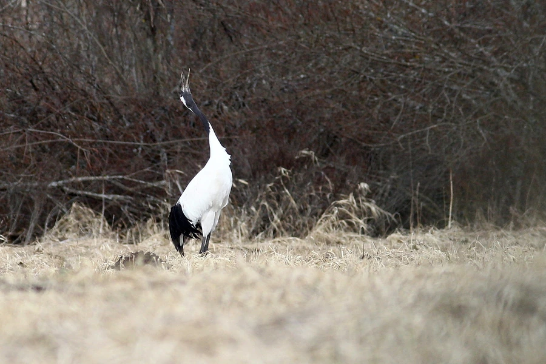

鸟类 · 动物界
丹顶鹤 Grus japonensis

通体雪白、头顶裸皮鲜红的大型涉禽，以优雅的求偶舞和“一夫一妻”闻名，被中国人视为仙鹤与长寿象征。
- 分类
- 门脊索动物门纲鸟纲目鹤形目科鹤科属鹤属
- 栖息环境
- 开阔的芦苇沼泽、浅水湖泊与河漫滩，越冬时常在沿海滩涂和稻田觅食
- 地理分布
- 繁殖于中国东北、俄罗斯远东和日本北海道，越冬于中国东部沿海及朝鲜半岛
- 保护级别
- IUCN 濒危（EN）；中国国家一级保护动物
物种志
丹顶鹤是体型最大的鹤类之一，体长 120–160 cm，翼展 220–250 cm，站立时几乎与成年人等高。全身羽毛以雪白为主，颈侧、次级飞羽和三级飞羽为黑色，头顶裸皮鲜红，配色黑白分明。它的喙长而直，腿细长，后趾退化变短，无法像其他鹤那样抓握树枝，却非常适合在浅水中长时间涉水觅食。
丹顶鹤在俄罗斯远东、中国东北的扎龙与向海湿地繁殖，秋季南迁至江苏盐城、山东黄河三角洲以及朝鲜半岛越冬。它们实行一夫一妻制，求偶时雌雄相对起舞，仰头鸣叫，声可传数千米。每年 4–5 月产卵 2 枚，由双亲轮流孵化约 31–33 天。目前全球野生种群约 3000 只，主要威胁是湿地围垦与人为干扰，中国已建立多处自然保护区加以保护。
形态与习性
- 食性鱼、虾、螺贝、昆虫及水生植物根茎，冬季也吃农田谷物
- 体长120–160 cm
- 翼展220–250 cm
- 体重7–10 kg
- 寿命野外约 30 年，圈养可超过 50 年
- 繁殖4–5 月产卵 2 枚，双亲孵化 31–33 天
- 迁徙10–11 月南迁至江苏、山东沿海越冬
趣味知识
- 头顶的红色并非羽毛，而是裸露的皮肤，情绪激动充血时颜色更鲜艳。
- 求偶时雌雄面对面跳跃、展翅、仰头鸣叫，动作像精心编排的双人舞。
- 丹顶鹤的鸣管盘绕在胸骨内，长度可达 1 米以上，叫声能传出 2–3 km。
- 中国画常把丹顶鹤与松树画在一起，但野生丹顶鹤生活在湿地，并不栖息松林。